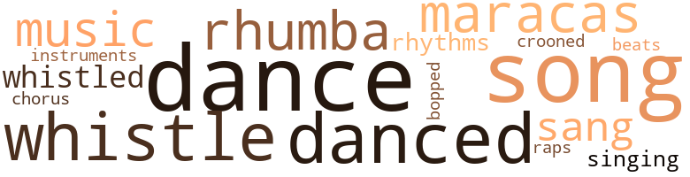
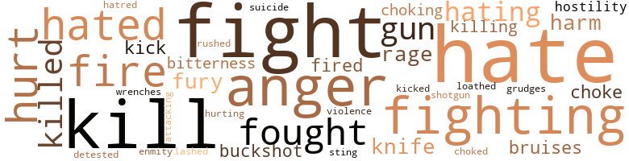

Forbidden Fruit, by Lucas, Curtis (1953)
74 music-related terms matched in this text.
Most frequent terms in this topic: song (11); dance (10); danced (9); whistle (8); dances (5)
bop.v.01
Definition: dance the bebop
| word | sentence |
|---|---|
| bopped | I bopped him a good one before they pulled me off him . " |
chorus.n.01
Definition: any utterance produced simultaneously by a group
| word | sentence |
|---|---|
| chorus | They said hello in a chorus , and the respect which they showed me was just a little less than the respect which they showed Skip . |
croon.v.01
Definition: sing softly
| word | sentence |
|---|---|
| crooned | " Querido , " she crooned softly . |
dance.n.01
Definition: an artistic form of nonverbal communication
| word | sentence |
|---|---|
| dance | Often she would look in the mirror and throw kisses at herself and laugh , watching her black eyes dance . |
| dance | She must never go to a dance , for in New York the dances were sensual and vulgar . |
| dances | She must never go to a dance , for in New York the dances were sensual and vulgar . |
| dances | She had a quick interest in boys ; she yearned for dances and parties . |
| dances | She went to all the movies and dances . |
| dance | I met her at a rhumba dance in East Harlem . |
| dances | And between dances I drank scotch and she drank Tom Collins . |
| dance | When the dance was over I was too drunk to drive the Oldsmobile back to Jersey . |
| dances | Between dances we talked and drank . |
| dance | But the dance finally ended , and somehow I hated for it to end . |
dance.v.02
Definition: move in a pattern; usually to musical accompaniment; do or perform a dance
| word | sentence |
|---|---|
| danced | We danced the way the rhumba should be danced that night - all the motion of the hips and the shoulders , while Marcia laughed and her eyes shone and her teeth flashed white and her lips swayed and her skirt swirled . |
dance.v.03
Definition: skip, leap, or move up and down or sideways
| word | sentence |
|---|---|
| danced | I thought of the way they danced with the other boys from the team , while I sat at the counter and ate ice cream and kept quiet , knowing they would n't dance with me . |
| dance | I thought of the way they danced with the other boys from the team , while I sat at the counter and ate ice cream and kept quiet , knowing they would n't dance with me . |
| danced | We danced once . |
| danced | Then we danced again . |
| danced | We danced again and she was very gay . |
| danced | At the dance hall , where the lights were brilliant and many and multicolored , we danced to the beat of the drums and the laughter-like chatter of the maracas . |
| danced | We danced the way the rhumba should be danced that night - all the motion of the hips and the shoulders , while Marcia laughed and her eyes shone and her teeth flashed white and her lips swayed and her skirt swirled . |
| dance | " Luke , you dance so - so wonderful ! " |
| dance | You love to dance , do n't you ? " |
| dance | " We can dance forever , if you wish . " |
| dance | When you and I are old - when the hair is white and I am fat - who would want to love and to dance ? " |
| danced | That afternoon we played the phonograph and danced and drank the fifth of scotch . |
| danced | Tiny bright heat spots danced before smarting eyes , and the drumming noises of the hammers tortured ear drums . |
maraca.n.01
Definition: a percussion instrument consisting of a hollow gourd containing pebbles or beans; often played in pairs
| word | sentence |
|---|---|
| maracas | She laughed often , and the maracas seemed to laugh with her . |
| maracas | The throbbing beat of drums and the chatter of maracas coming from juke boxes . |
| maracas | At the dance hall , where the lights were brilliant and many and multicolored , we danced to the beat of the drums and the laughter-like chatter of the maracas . |
| maracas | The beat of the drum was more frenetic , the maracas laughed with a wilder glee , and the quivering of Marcia 's shoulders and body had a wild beauty about it . |
| maracas | Somewhere in my mind I heard the chattering laughter of the maracas , and I knew I would go crazy if I stayed there any longer . |
music.n.01
Definition: an artistic form of auditory communication incorporating instrumental or vocal tones in a structured and continuous manner
| word | sentence |
|---|---|
| music | The music came thumping from the radio - that plaintive blues song again - why was I always hearing the thing ? |
| music | Traffic was light I whistled with the music and patted my left foot , keeping my right foot on the gas pedal . |
| music | She seldom played anything but Latin American music . |
| music | I put a quarter in the slot and turned it to soft music . |
musical_instrument.n.01
Definition: any of various devices or contrivances that can be used to produce musical tones or sounds
| word | sentence |
|---|---|
| instruments | Common laborers , all of us , ripping and straining and tearing and breaking , while the skilled men worked more easily with blueprints and rules and saws and hammers and pliers and surveying instruments . |
rap.n.05
Definition: genre of African-American music of the 1980s and 1990s in which rhyming lyrics are chanted to a musical accompaniment; several forms of rap have emerged
| word | sentence |
|---|---|
| raps | Three more raps of the gavel , distinct and even-spaced , and we stood and bowed our heads to the short prayer from the chaplain . |
rhythm.n.01
Definition: the basic rhythmic unit in a piece of music
| word | sentence |
|---|---|
| beats | I patted her breasts with both hands , gently , yet keeping time to the rhumba beats . |
rhythm.n.04
Definition: the arrangement of spoken words alternating stressed and unstressed elements
| word | sentence |
|---|---|
| rhythms | She went to the record player and played Cuban rhythms , then ran into the kitchenette and washed the coffee cups . |
| rhythms | Then she turned on the small rado and tuned to a station that played Latin rhythms . |
rumba.n.01
Definition: syncopated music in duple time for dancing the rumba
| word | sentence |
|---|---|
| rhumba | I met her at a rhumba dance in East Harlem . |
| rhumba | The nickelodian played endless rhumba songs . |
| rhumba | Tonight I want to do the rhumba and calypso and samba . |
| rhumba | We danced the way the rhumba should be danced that night - all the motion of the hips and the shoulders , while Marcia laughed and her eyes shone and her teeth flashed white and her lips swayed and her skirt swirled . |
| rhumba | I patted her breasts with both hands , gently , yet keeping time to the rhumba beats . |
sing.v.02
Definition: produce tones with the voice
| word | sentence |
|---|---|
| sang | " Lettuce and tomatoes , " she sang to the short order man . |
| sang | I sang with the blues singer , but I did n't drive slow . |
| singing | Then she started singing softly to me , in Spanish . |
| sang | I smiled , and she sang a sad , sweet song to me . |
singing.n.01
Definition: the act of singing vocal music
| word | sentence |
|---|---|
| singing | From the kitchenette came the smell of coffee , and I heard Marcia singing , a happy , carefree note to her voice . |
song.n.01
Definition: a short musical composition with words
| word | sentence |
|---|---|
| song | I smiled as I listened to the song from the music box in the saloon : " You loved me until morning - Darling , drive along slow - Now you have to go and leave , And I hate to see you go ! " |
| song | The music came thumping from the radio - that plaintive blues song again - why was I always hearing the thing ? |
| song | In my blissful mood I found the blues song real easy to take . |
| song | If I had only listened to that song ! |
| songs | The nickelodian played endless rhumba songs . |
| songs | The numbers were mostly hillbilly and western songs , the kind that white people like . |
| song | " I like that song , " she said . |
| song | I thought of how foolish life was , like that song , how people let a thing called bravery and courage drive them into something they did n't want to go into . |
| song | There was a lot of noise coming from the saloon , and the words of the song from the music box blared out into the street : " Lover , lover , lover , Wo n't you chive along slow ! |
| song | I went into the hall , thinking of the admonition in the song . |
| song | She was like the words to a song I had heard : " What you see is what she 's got . " |
| song | Then it was like a dream , an ugly , twisted dream , with cops in patrol cars chasing me , sending the bright red flares flashing before me - with drums throbbing and the giggle-like laughter of mar-acas - with a music box blaring a crazy song about a man who had to fight a duel - with men grabbing me and dragging me into the darkness between two houses , while I fought them ... . |
| song | I smiled , and she sang a sad , sweet song to me . |
whistle.v.01
Definition: make whistling sounds
| word | sentence |
|---|---|
| whistle | I sat on the tool box until the eight o'clock whistle blew . |
| whistle | When the noon whistle blew we dropped our tools and headed for the shanty . |
| whistled | Traffic was light I whistled with the music and patted my left foot , keeping my right foot on the gas pedal . |
| whistled | John Knight whistled softly when he saw me . |
| whistle | I remained outside the shanty until the whistle blew . . . . |
| whistle | Skip came on the job just as the twelve-thirty whistle blew . |
| whistle | Outside , waiting for the whistle to blow was Harry Lerner , his dark , sinister mind thinking his own evil thoughts . |
| whistle | " The whistle blew five or six minutes ago . " |
| whistle | The eight o'clock whistle blew , and we filed out of the shanty and headed for the tool box . |
| whistle | And look at the way they 're playing nowl " They talked about baseball until the whistle blew . . . . |
185 violence-related terms matched in this text.
Most frequent terms in this topic: hate (27); fight (24); kill (19); anger (13); fighting (11)
abhor.v.01
Definition: find repugnant
| word | sentence |
|---|---|
| loathed | Never again would Mary Ford give her body to this evil , sinister , vulgar person whom she loathed . |
anger.n.01
Definition: a strong emotion; a feeling that is oriented toward some real or supposed grievance
| word | sentence |
|---|---|
| anger | Some anger started working around down inside of me . |
| anger | A breath of anger growing in the crowd . |
| anger | Sensing the heightened emotions and the strong undercurrent of anger and suspicion and the divided loyalties , I felt rage boiling up inside me . |
| anger | The anger worked up a little higher inside me . |
| anger | I asked Harry , trying to keep the anger out of my voice . |
| anger | Gone , even , was my anger at the state cop who had shaken me down . |
| anger | Not with sudden passion , not in a fit of anger . |
| anger | He flushed with anger , and I knew how he felt . |
| anger | For all my moralizing , for all my pretension of anger at the thought of Harry 's taking advantage of a kid , I knew what had actually made me attack the white boy . |
| anger | Then I felt the anger coming up , and I fought it down . |
| anger | He watched me , gauging my anger . |
| anger | I felt anger rising inside me . |
| anger | When Harry looked at me , however , his face flushed darkly with anger and hate , and his eyes narrowed . |
attack.v.02
Definition: attack in speech or writing
| word | sentence |
|---|---|
| attacking | I knelt there , Blinking that it did n't make sense , that the men had no reason for attacking me , realizing that it was useless to try to fight in my condition . |
bird_shot.n.01
Definition: small lead shot for shotgun shells
| word | sentence |
|---|---|
| buckshot | I thought of the way things were over in Jersey - the union and Harry Lerner and Paoli and Peterson , the fellow who had refused to pay off a shylock loan , only to get his head almost blown off with a load of buckshot . |
| buckshot | Several days later they found the white fellow lying in an alley , his head half blown off by a double load of buckshot from a shotgun . |
bruise.n.01
Definition: an injury that doesn't break the skin but results in some discoloration
| word | sentence |
|---|---|
| bruises | I looked at the boys , noting that none of them were scarred or had any bruises from the night before . |
| bruises | He looked at me , that kind of look that searched my face and saw the swelling and the bruises , his face obvious and intent , and then he smiled a fixed smile , and there was something vicious and evil and sinister about him . |
fight.n.02
Definition: the act of fighting; any contest or struggle
| word | sentence |
|---|---|
| fighting | Several men had jumped Mose Turner ; he was roaring and cursing and fighting . |
| fighting | They little realized that all their fighting was because of a white girl named Mary Ford . |
fight.n.05
Definition: a boxing or wrestling match
| word | sentence |
|---|---|
| fight | The laboring men of the construction industry were assembling to do business , ready for anything from the lifting of a collection for a sick member to a good fight . |
| fight | The fight was on between the two of us . |
| fight | He was drawing the entire membership into the fight , hoping to use them against me . |
| fight | Was it right for Harry Lerner , just because the union members were dull and illiterate and slow in understanding - was it right for him to use them for a club in his fight with me over a woman ? |
| fight | Everywhere men were fighting , cursing each other and striking out and not asking the why or how of the fight . |
| fight | He was an innocent trustee of forty-five who had unwittingly allowed himself to be caught in a fight between Harry Lerner and me . |
| fight | Harry and I were locked in a bitter struggle , and the fight was becoming increasingly furious and complicated . |
| fight | Two things were at the bottom of the fight - a white girl whom we both wanted , and a white man who loaned money to construction laborers at the pay-back rate of a quarter on a dollar . |
| fight | I knew all fight was out of him , but rage was burning inside me and I slammed him again on the jaw and he reeled back to the tunnel wall . |
| fight | And when the fight was over we either became friends or we avoided each other . |
| fight | " I had a fight . " ' |
| fight | " God , what a fight . |
| fight | About the fight and everything . |
| fight | ' What was the idea of the fight then ? " |
| fight | I had n't seen him since the fight in the tunnel , and I watched him as he changed his clothes . |
fight.v.02
Definition: fight against or resist strongly
| word | sentence |
|---|---|
| fight | Men who would fight for a job , who would vote for a job , who would beg for a job or buy one . |
| fighting | Whenever they felt wronged they retaliated by fighting . |
| fight | He was out to destroy me , and he had chosen the union meeting as a battleground on which to fight and crush me . |
| fighting | The battle was between Harry Lerner and myself ; we were fighting over a white girl named Mary Ford . |
| fighting | And just as quickly everybody was fighting . |
| fighting | Everywhere men were fighting , cursing each other and striking out and not asking the why or how of the fight . |
| fighting | Somehow somebody had done an injustice to a fellow man , and they were fighting to do something about it . |
| fighting | They were still fighting when the police emergency squad came into the building and broke it up . |
| fighting | For months I had been too steady , working hard and fighting to get the money in the bank , going to church on Sundays and staying away from saloons and package stores . |
| fight | Something about a man who was going to fight a duel or something at noon . |
| fight | He was afraid and did n't want to fight , but he had to fight to prove that he was n't afraid . |
| fight | He was afraid and did n't want to fight , but he had to fight to prove that he was n't afraid . |
| fight | I knelt there , Blinking that it did n't make sense , that the men had no reason for attacking me , realizing that it was useless to try to fight in my condition . |
| fight | Vainly I tried to fight back , but he beat me mercilessly . |
| fought | I had fought fellows before , and they fought me back . |
| fought | I had fought fellows before , and they fought me back . |
| fought | Then I felt the anger coming up , and I fought it down . |
| fighting | Before it had been as if we had been fighting , as if we had been trying to crush each other . |
| fight | On the morrow I was going to fight Harry Lerner , and if God gave me the opportunity , I was going to kill him . |
| fighting | My words had been hard , and with anybody else they would have been fighting by now . |
| fight | Then it was like a dream , an ugly , twisted dream , with cops in patrol cars chasing me , sending the bright red flares flashing before me - with drums throbbing and the giggle-like laughter of mar-acas - with a music box blaring a crazy song about a man who had to fight a duel - with men grabbing me and dragging me into the darkness between two houses , while I fought them ... . |
| fought | Then it was like a dream , an ugly , twisted dream , with cops in patrol cars chasing me , sending the bright red flares flashing before me - with drums throbbing and the giggle-like laughter of mar-acas - with a music box blaring a crazy song about a man who had to fight a duel - with men grabbing me and dragging me into the darkness between two houses , while I fought them ... . |
| fought | I told her how I had planned to kill Harry , how we had fought . |
| fought | I had fought Harry , but I had not been up on the scaffold with him . |
| fought | Mose Turner , who was evil-mouthed and vulgar ; he drank too much and fought too much . |
fury.n.01
Definition: a feeling of intense anger
| word | sentence |
|---|---|
| rage | The president , not dreaming that anything like that was coming up , was beside himself with surprise and rage . |
| rage | Sensing the heightened emotions and the strong undercurrent of anger and suspicion and the divided loyalties , I felt rage boiling up inside me . |
| fury | For a moment he stood there with the hammer in his hand , his face contorted with cold fury . |
| fury | Then the fury disappeared , and his face became a mask . |
| fury | And I raised the sledge hammer and beat on the concrete with controlled fury . |
| rage | I knew all fight was out of him , but rage was burning inside me and I slammed him again on the jaw and he reeled back to the tunnel wall . |
gag.v.06
Definition: cause to retch or choke
| word | sentence |
|---|---|
| choked | For an instant the hopes that I had just begun feeling seemed choked and dying . |
| choke | It made me choke a bit to think how far Skip was going for me . |
| choking | I was sitting astraddle Harry Lerner 's body , my fingers around his neck , choking him while he struggled feebly to pry my fingers loose . |
| choking | Then you started choking him . |
| choke | What made you choke him , Luke ? " |
grudge.n.01
Definition: a resentment strong enough to justify retaliation
| word | sentence |
|---|---|
| grudges | I ca n't carry grudges . |
gun.n.01
Definition: a weapon that discharges a missile at high velocity (especially from a metal tube or barrel)
| word | sentence |
|---|---|
| gun | Skip had a permit to carry a gun , and they knew he must have it in that coat pocket . |
| gun | He had a gun ; it was polished nickel and very small . |
| guns | " Would n't air guns be easier ? " |
| guns | " Air guns make too much noise , " Harry told her . |
| gun | He remained wide-legged , his hand hovering around his holstered gun , until I came up to him . |
hate.n.01
Definition: the emotion of intense dislike; a feeling of dislike so strong that it demands action
| word | sentence |
|---|---|
| hatred | The hatred , the conflict was a personal thing between us . |
| hate | Then I felt the awful surging hate sweep over me . |
| hate | When Harry looked at me , however , his face flushed darkly with anger and hate , and his eyes narrowed . |
| hate | The world is a place of conflict ; it is pregnant with hate and love , with clashes of opposing forces . |
| hate | I felt the hate inside me . |
hate.v.01
Definition: dislike intensely; feel antipathy or aversion towards
| word | sentence |
|---|---|
| hate | Again the noise of the music box blared out in the street : " You loved me in the evening - Please drive along slow - Yes , you loved me until morning And I hate to see you go ! " |
| hate | I smiled as I listened to the song from the music box in the saloon : " You loved me until morning - Darling , drive along slow - Now you have to go and leave , And I hate to see you go ! " |
| hate | I 'm an old man , son , and I hate to see young fellows like you go wrong . |
| hate | " I hate to do this , Bob , " he said softly . |
| hating | I drove straight home from the union hall , hating the long stretch of time which lay before me between then and Monday morning when I would again go back to work . |
| hating | I poured the first drink , a little one , shuddering at its strong whiskey smell , hating the memory of how it tasted , every nerve inside me rebelling at the nauseating sickness that I knew I would feel afterward . |
| hate | Lord , I hate to see you gol " Heading into the highway I felt like I had the world in my corner . |
| hate | He said , " I hate to do this to you , boy . |
| hate | That 's a pretty piece of junk you 're driving , and I hate to make you stop driving it . " |
| hate | " I hate to lose my license , sir , " I said . |
| hate | " Just how much do you hate to lose it ? " |
| hated | But the dance finally ended , and somehow I hated for it to end . |
| hate | " Do you hate me that much ? " |
| hated | He hated me , and I hated him . |
| hated | He hated me , and I hated him . |
| hating | Always wanting something just a little beyond your reach , and hating everyone because it is beyond your reach . " |
| hated | You hated him because you thought he could have me and you could not . " |
| hate | I said , " I still hate him . " |
| hate | " I hate him , " she said . |
| hate | " I think I hate him more than you do . " |
| hate | " Luke , " she said , " I think you hate me too . " |
| hate | You hate me , and you want me because you hate me . |
| hate | You hate me , and you want me because you hate me . |
| hate | Sometimes I feel apart and lonely and unhappy , and then I hate the way you hate . |
| hate | Sometimes I feel apart and lonely and unhappy , and then I hate the way you hate . |
| hate | Sometimes I hate men so much that I have to have them . |
| hated | I hated him - I detested him . |
| detested | I hated him - I detested him . |
| hate | I would hate him while he was with me , and I would hate him afterward . |
| hate | I would hate him while he was with me , and I would hate him afterward . |
| hate | I hate Harry . |
| hate | I hate drinking . " |
| hates | It takes nerves to hold a bull point steady , while a man who hates you strikes the point with a sledge hammer . |
| hating | We worked in silence , each of us hating the other 's guts . |
| hating | Both Harry and I ate silently , looking at each other occasionally , hating each other 's guts . |
| hated | I hated him and he hated me . |
| hated | I hated him and he hated me . |
hostility.n.01
Definition: a hostile (very unfriendly) disposition
| word | sentence |
|---|---|
| hostility | He said nothing , but his silence bespoke his hostility . |
| hostility | Then we looked at each other , the hostility deep in our eyes . |
hostility.n.02
Definition: a state of deep-seated ill-will
| word | sentence |
|---|---|
| enmity | We had gone too far ; the enmity between us had become too deadly a thing . |
injury.n.01
Definition: any physical damage to the body caused by violence or accident or fracture etc.
| word | sentence |
|---|---|
| harm | There was no man there who , hearing the accusation , did not take one side or the other , and men growled deep in their throats and swore to do harm either to me or to Bob Kennedy . |
| harm | " Yeah " Even as I answered him I sensed that something was wrong , that these men meant me bodily harm . |
| harm | I know you did n't mean any harm . |
| hurt | They did n't look at me , but they looked at each other , hard-faced and hurt . |
kick_back.v.02
Definition: spring back, as from a forceful thrust
| word | sentence |
|---|---|
| kick | They 're watching Harry , and I 'd feel a lot easier if we could kick him out of the union . |
| kick | Harry Lerner was out to get me , and it would n't do any good to kick him off the fob . |
| kicked | I went down to my knees and tried to get up , but one of them kicked me savagely . |
kill.v.10
Definition: cause the death of, without intention
| word | sentence |
|---|---|
| killed | And I had seen one man killed . |
| killed | " If that guy had touched me with that knife - " " If I had n't hit him over the head with a chair , " John Knight cut in , " he would 've killed you . " |
| kill | He 'd kill a guy for a friend , Luke . " |
| killed | For a time each of us was at the mercy of the other - each of us could have killed the other with a single blow of the sixteen-pound sledge hammer . |
| killed | Remember Peterson , the fellow that got killed a couple of years ago ? " |
| kill | Finally I tossed it off , gagged , then grabbed for the glass of soda to kill the fiery burn . |
| kill | If my aim was true , and I hit him squarely in the head , the blow would kill him . |
| kill | I said , " I 'll kill you , you hear ! |
| kill | I 'll kill you . " |
| kill | I said , " I 'm going to kill you , Harry ! " |
| kill | I said , " So help me God , I 'll kill you first chance I get . " |
| killing | How do you go about killing a man and making it look like an accident ? |
| kill | It was Harry and me high up on the swinging scaffold , each of us trying to figure out a way to kill the other without getting caught . |
| kill | She said , " I think I 'm going to kill myself . " |
| kill | I would like to kill him . |
| kill | Harry is evil and oh , so vulgar " " I 'm going to kill Harry , " I said . |
| Kill | Then she whispered , " Kill him , Luke ! |
| kill | Please kill him - for mel " It was a quarter after twelve when I drove her back and let her out of the car a block from the hospital . |
| kill | On the morrow I was going to fight Harry Lerner , and if God gave me the opportunity , I was going to kill him . |
| killing | For God 's sake , you 're killing him ! " |
| kill | " Quit it before you kill him . |
| kill | I told her how I had planned to kill Harry , how we had fought . |
| kill | " I wanted to kill him , " I said . |
| killed | Men get killed . |
| kill | For I 'm going to kill you . |
| kill | For I 'm going to kill you and have her anyway . |
| kill | " I 'll kill the bastard ! " |
knife.n.02
Definition: a weapon with a handle and blade with a sharp point
| word | sentence |
|---|---|
| knife | One man raised a clenched hand , and a knife flashed . |
| knife | I said , " Do you know how close you came to getting a knife in your guts , Mose ? " |
| knife | " If that guy had touched me with that knife - " " If I had n't hit him over the head with a chair , " John Knight cut in , " he would 've killed you . " |
open_fire.v.01
Definition: start firing a weapon
| word | sentence |
|---|---|
| fire | " I want you to fire him Monday morning . " |
| fire | " I do n't think we ought to fire Harry Monday . " |
| fired | Ca n't you see how it 'll look with the fellows if Harry gets fired just because we do n't like each other ? " |
| fire | " I 'll fire him tonight . |
| fire | If I did n't know how it was , I 'd fire you too . |
| fires | Now you fellows go on to work before the superintendent comes on the job and fires all of us . " |
| fire | " Okay , " Skip said , " Tell the foreman to fire him . " |
| fire | " But we better not fire him . " |
| fired | Said he 'd get me fired from the hospital before I graduate . " |
pain.v.02
Definition: cause emotional anguish or make miserable
| word | sentence |
|---|---|
| hurt | I said nothing , I was shop steward , and it was my fob to look out for the laborers , but I did n't think Harry was hurt . |
| hurt | He looked at me and grinned , and I knew he was n't hurt at all . |
| hurt | " I 'm going to hurt you , Bob , " he said . |
| hurt | Just like that white fellow , Peterson , got hurt two years before then . |
| hurt | They got hurt and went to first aid , and she bandaged them up and sent them back on the job . |
| hurt | Ai n't nobody trying to hurt you . |
| hurting | I laughed , the kind of laugh that meant how much something was hurting me on the inside . |
resentment.n.01
Definition: a feeling of deep and bitter anger and ill-will
| word | sentence |
|---|---|
| bitterness | I laughed , and all the bitterness was in my laughter . |
| bitterness | All the bitterness that I felt . |
rush.v.02
Definition: attack suddenly
| word | sentence |
|---|---|
| rushed | I rushed upon him as he stood up , hitting him hard against the jaw . |
shotgun.n.01
Definition: firearm that is a double-barreled smoothbore shoulder weapon for firing shot at short ranges
| word | sentence |
|---|---|
| shotgun | Several days later they found the white fellow lying in an alley , his head half blown off by a double load of buckshot from a shotgun . |
sting.n.03
Definition: a painful wound caused by the thrust of an insect's stinger into skin
| word | sentence |
|---|---|
| sting | The salt taste of sweat was in my mouth , and my eyes smarted from its sting . |
suicide.n.01
Definition: the act of killing yourself
| word | sentence |
|---|---|
| suicide | But on the skyway that would be suicide . |
violence.n.01
Definition: an act of aggression (as one against a person who resists)
| word | sentence |
|---|---|
| violence | Suddenly there was a feeling of air bubbles in my stomach , and I was just able to get to the bowl before all my inside seemed to explode and I retched and vomited repeatedly , my body shaking with the violence of the retches . |
whip.v.04
Definition: strike as if by whipping
| word | sentence |
|---|---|
| lashed | His fist lashed out and caught me on the chin . |
wrench.n.01
Definition: a sharp strain on muscles or ligaments
| word | sentence |
|---|---|
| wrenches | I got the two hooks and a coil of rope and two wrenches and started up the stairway which led to the roof . |
37 religion-related terms matched in this text.
Most frequent terms in this topic: church (8); God (8); Christ (5); Methodist (2); faith (2)
catholic.n.01
Definition: a member of a Catholic church
| word | sentence |
|---|---|
| Catholic | And the only faith she had ever known was the Catholic faith . |
church.n.02
Definition: a place for public (especially Christian) worship
| word | sentence |
|---|---|
| church | For months I had been too steady , working hard and fighting to get the money in the bank , going to church on Sundays and staying away from saloons and package stores . |
| church | " Tomorrow I go to church . " |
| church | I thought about it a while , wondering what it would be like at my church if I took her there . |
| church | " What is your church , Luke ? " she asked at last . |
| church | " And do you like your church very much ? " |
| church | That was the first Sunday I missed church since my high school days . |
church.n.04
Definition: the body of people who attend or belong to a particular local church
| word | sentence |
|---|---|
| church | " Then I think I would like your church also , Luke . |
| church | I did n't go to church that Sunday - I was too bruised and sore . |
| Church | Two days later Marcia and I were married in the parsonage of the African Methodist Episcopal Church . |
god.n.03
Definition: a man of such superior qualities that he seems like a deity to other people
| word | sentence |
|---|---|
| God | But , by God , they better not try anything funny when they go down there ! " |
| God | " For God 's sake , Skip ! " |
| God | On the morrow I was going to fight Harry Lerner , and if God gave me the opportunity , I was going to kill him . |
| God | For God 's sake , you 're killing him ! " |
| God | Oh God Almighty . " |
| God | Is it right for me to shut my eyes to everything that is desirable , while that stupid bastard gets everything just because God made us different ? " |
| God | But when I got that glimpse - that hope - of a little happiness , there were men to stop me just because God had me what I was . |
| God | And , by God , you ca n't do a damned thing about it . " |
godhead.n.01
Definition: terms referring to the Judeo-Christian God
| word | sentence |
|---|---|
| Almighty | Oh God Almighty . " |
hell.n.01
Definition: any place of pain and turmoil
| word | sentence |
|---|---|
| hell | Get him the hell off the job . " |
| hell | I explained to him what Harry was trying to do , and Paoli said to hell with it . |
humdinger.n.01
Definition: someone of remarkable excellence
| word | sentence |
|---|---|
| humdinger | " It must have been a humdinger . " |
jesus.n.01
Definition: a teacher and prophet born in Bethlehem and active in Nazareth; his life and sermons form the basis for Christianity (circa 4 BC - AD 29)
| word | sentence |
|---|---|
| Jesus | " Oh , Jesus Christ . |
| Jesus | Oh , Jesus Christ ! " |
messiah.n.01
Definition: any expected deliverer
| word | sentence |
|---|---|
| Christ | " For Christ 's sake , Luke , " he said angrily . |
| Christ | " For Christ sake , Luke , what the hell got into you two ? |
| Christ | " Oh , Jesus Christ . |
| Christ | Oh , Jesus Christ ! " |
| Christ | " Christ a ' mighty , how the hell did you get into anything like that ? " |
methodist.n.01
Definition: a follower of Wesleyanism as practiced by the Methodist Church
| word | sentence |
|---|---|
| Methodist | African Methodist Episcopal . " |
| Methodist | Two days later Marcia and I were married in the parsonage of the African Methodist Episcopal Church . |
prayer.n.01
Definition: the act of communicating with a deity (especially as a petition or in adoration or contrition or thanksgiving)
| word | sentence |
|---|---|
| prayer | Three more raps of the gavel , distinct and even-spaced , and we stood and bowed our heads to the short prayer from the chaplain . |
religion.n.01
Definition: a strong belief in a supernatural power or powers that control human destiny
| word | sentence |
|---|---|
| faith | And the only faith she had ever known was the Catholic faith . |
| faith | And the only faith she had ever known was the Catholic faith . |
satan.n.01
Definition: (Judeo-Christian and Islamic religions) chief spirit of evil and adversary of God; tempter of mankind; master of Hell
| word | sentence |
|---|---|
| devils | The sun and the heat were twin devils , tormenting everybody . |
temple.n.03
Definition: an edifice devoted to special or exalted purposes
| word | sentence |
|---|---|
| temple | The blood tore at my temple , and for a while I could n't breathe . |
worship.v.02
Definition: show devotion to (a deity)
| word | sentence |
|---|---|
| worshipping | That was the way with men like those in the union - they elected a man to office , then started worshipping him . |